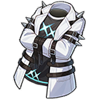
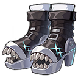
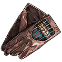
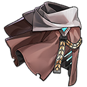

추천 광추
태양보다 밝게 빛나는 것
일반 공격으로 공격력·회복효율 확보
효과 자세히
치명타 확률 +18%. 일반 공격당 공격력 +18%·회복효율 +6%(2턴, 최대 2스택).
보이는 것이 곧 나
공격력·회복효율과 팀 치명타 피해
효과 자세히
공격력 +18%, 회복효율 +10%. 필살기 에너지 1pt당 필살기 피해 +0.2%(최대 +72%). 시작·필살기 후 아군 치명타 피해 +24%(3턴).
어떤 에이언즈의 몰락
공격으로 공격력 중첩
효과 자세히
공격 발동 시 이번 전투에서 공격력이 16% 증가. 해당 효과 최대 중첩수: 4스택. 장착한 캐릭터는 적의 약점을 격파한 후 가하는 피해가 24% 증가. 지속 2턴
대체할 수 없는 것
공격력과 피격·처치 후 회복·피해
효과 자세히
공격력 +24%. 처치·피격 → 공격력 8%만큼 HP 회복, 피해 +24%(자신의 다음 턴 종료까지, 턴당 1회).
추천 유물
금단의 열매를 삼킨 이단 4 · 텐고쿠@라이브스트리밍 2
- 머리 주옵션HP부옵션치명타 확률 · 치명타 피해 · 공격력%
- 손 주옵션공격력부옵션치명타 확률 · 치명타 피해 · 공격력%
- 몸통

주옵션치명타 확률 / 치명타 피해부옵션치명타 확률 (주옵션 제외) · 치명타 피해 (주옵션 제외) · 공격력% - 다리

주옵션공격력%부옵션치명타 확률 · 치명타 피해 - 구체
 주옵션허수 피해 증가 / 공격력%부옵션치명타 확률 · 치명타 피해 · 공격력% (주옵션 제외)
주옵션허수 피해 증가 / 공격력%부옵션치명타 확률 · 치명타 피해 · 공격력% (주옵션 제외) - 매듭 주옵션공격력%부옵션치명타 확률 · 치명타 피해
이 조합을 추천하는 이유
이단자 4세트와 텐고쿠로 포인트 소모형 일반 공격의 피해를 높입니다. 기연 성혼 추가 공격도 일반 공격 피해 보너스를 받습니다.
들이삭과 동행하는 거너 4 · 뭇별 경기장 2
- 머리
 주옵션HP부옵션치명타 확률 · 치명타 피해 · 공격력%
주옵션HP부옵션치명타 확률 · 치명타 피해 · 공격력% - 손

주옵션공격력부옵션치명타 확률 · 치명타 피해 · 공격력% - 몸통

주옵션치명타 확률 / 치명타 피해부옵션치명타 확률 (주옵션 제외) · 치명타 피해 (주옵션 제외) · 공격력% - 다리
 주옵션공격력%부옵션치명타 확률 · 치명타 피해
주옵션공격력%부옵션치명타 확률 · 치명타 피해 - 구체
 주옵션허수 피해 증가 / 공격력%부옵션치명타 확률 · 치명타 피해 · 공격력% (주옵션 제외)
주옵션허수 피해 증가 / 공격력%부옵션치명타 확률 · 치명타 피해 · 공격력% (주옵션 제외) - 매듭
 주옵션공격력%부옵션치명타 확률 · 치명타 피해
주옵션공격력%부옵션치명타 확률 · 치명타 피해
이 조합을 추천하는 이유
거너 4세트 → 속도 +6%, 일반 공격 피해 +10%. 경기장 → 치명타 확률 70% 이상이면 일반 공격·스킬 피해 +20%.
이 정도면 잘 키웠다
선택한 세팅 기준 · —는 확인된 수치 없음
- 선데이 치확 참고
- 스파클 전광 치확 참고
4.7 세팅 시트의 전투 스킬 포인트 연계 추천입니다.
| 스탯 | 추천 스탯 | 준종결 | 종결 |
|---|---|---|---|
| 공격력 | 3300 | — | — |
| 치명타 확률 | 100%[1]선데이 20% · 스파클 전용 광추 10% 참고. | — | — |
| 치명타 피해 | 130% | — | — |
스탯 조건과 각주
- 치명타 확률 · 추천 스탯 선데이 20% · 스파클 전용 광추 10% 참고. ↑
- 명함·전광
뭇별 장신구를 사용하는 4.7 종결 수치입니다.
| 스탯 | 추천 스탯 | 준종결 | 종결 |
|---|---|---|---|
| 공격력 | — | — | 3200 |
| 치명타 확률 | — | — | 100% |
| 치명타 피해 | — | — | 220% |
세팅 기준·출처
4.7 종결 탭의 명함·전용 광추 기준이며, 동굴 유물은 원문에 기재되지 않았습니다. 확인한 자료에 독립적인 준종결 수치가 없습니다.
성혼과 추천 돌파
기연 성혼 해금 후 일반 성혼은 2가 우선입니다. 강화 일반 공격 → 필살기 → 역린을 사용한 강화 일반 공격으로 이어갑니다.
1긍지 상한 +4·공격 단수당 추가 +1
긍지의 중첩 가능 스택 수가 4스택 증가하며, 공격 단수마다 긍지를 1스택 추가로 획득
2필살기 → 행동 게이지 +100%·역린 +1추천
필살기 발동 후 단항•음월의 행동 게이지가 100% 증가하고 추가로 역린 1개를 획득
3전투 스킬 +2 · 일반 공격 +1
전투 스킬 +2 · 일반 공격 +1
4노호 버프가 다음 자신의 턴 종료까지 지속
노호의 버프 효과가 자신의 다음 턴이 종료될 때까지 지속된다
5필살기 +2 · 특성 +2
필살기 +2 · 특성 +2
6동료 필살기 → 다음 빛나는 도약 허수 저항 관통 +20%, 최대 3스택
다른 아군 캐릭터가 필살기를 발동하면 단항•음월이 다음 번에 빛나는 도약 발동 시 허수 속성 저항 관통이 20% 증가. 해당 효과 최대 중첩수: 3스택
추천 파티


기본 운영과 행적
기연 성혼 · EX
역린 보유 상한 +1. 파티의 전투 스킬 포인트 소모 5pt마다 자신의 피해 +240%(3턴), 적 전체에 공격력 500%의 허수 추가 공격, 역린 +1. 이 추가 공격은 일반 공격 피해로 계산됩니다.
- 역린 소모도 전투 스킬 포인트 소모로 계산됩니다. 음월 외 동료의 포인트 소모까지 합쳐 추가 공격 주기를 맞추세요.
- 일반 성혼 1~6과 별도로 해금합니다. 명함에서도 적용할 수 있습니다.
기본 운영
비술로 역린을 얻은 뒤 3단계 강화 일반 공격을 사용하세요. 필살기로 역린을 회수하고 스파클의 필살기를 포인트가 줄어든 시점에 사용합니다.
행적 우선순위
일반 공격 > 전투 스킬 = 특성 = 필살기. 강화 일반 공격의 피해 배율은 일반 공격 레벨을 따라갑니다.
아하 속도 계산기 →